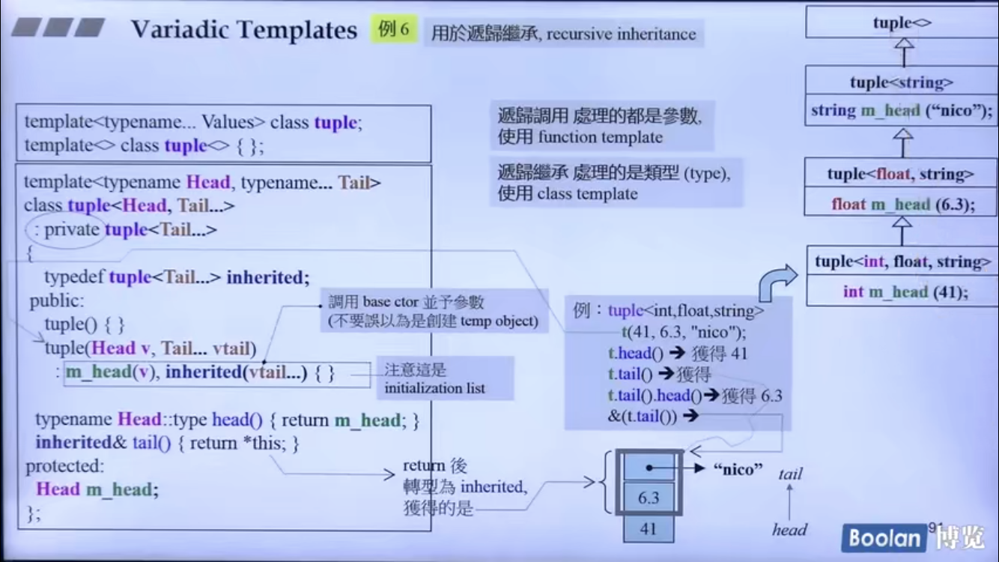
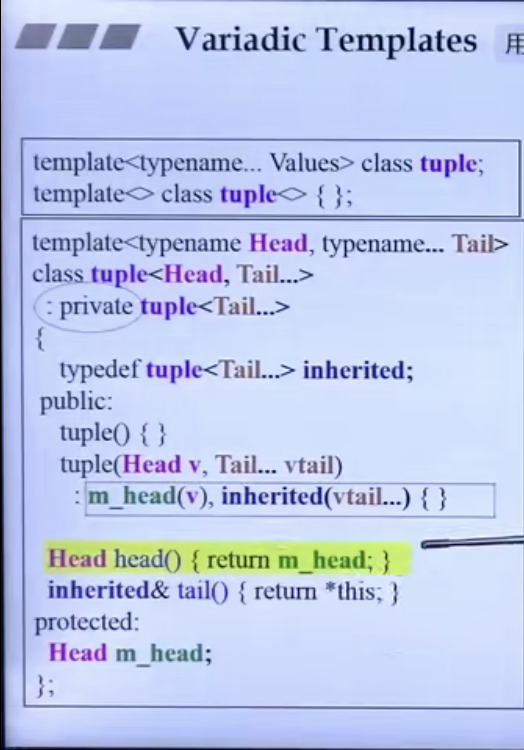
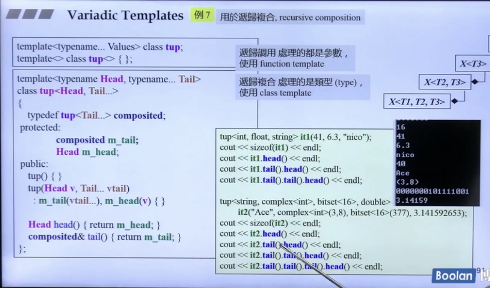

About friend and template
friend
在定义一个类的时候，可以把一些函数（包括全局函数和其他类的成员函数）声明为“友元”，这样那些函数就成为该类的友元函数，在友元函数内部就可以访问该类对象的私有成员了。 将全局函数声明为友元的写法如下：
friend 返回值类型 函数名(参数表);
将其他类的成员函数声明为友元的写法如下：
friend 返回值类型 其他类的类名::成员函数名(参数表);
但是，不能把其他类的私有成员函数声明为友元.
友元的声明：只能出现在类定义的内部，在类内出现的位置不限；友元不是类的成员，也不受它所在区域访问控制级别的约束；友元的声明仅仅指定了访问的权限，而非一个通常意义上的函数声明，如果我们希望类的用户能调用某个友元函数，必须在友元声明之外再专门对函数进行一次声明。
一个类 A 可以将另一个类 B 声明为自己的友元，类 B 的所有成员函数就都可以访问类 A 对象的私有成员。在类定义中声明友元类的写法如下：friend class 类名;
template
-
类模板：一个类模板(类生成类)允许用户为类定义个一种模式，使得类中的某些数据成员、默认成员函数的参数，某些成员函数的返回值，能够取任意类型(包括系统预定义的和用户自定义的)。如果一个类中的数据成员的数据类型不能确定，或者是某个成员函数的参数或返回值的类型不能确定，就必须将此类声明为模板，它的存在不是代表一个具体的、实际的类，而是代表一类类。
-
通过typename或class关键字将T视为一种未知类型
-
类模板的声明和实现要在同一个文件中，否则，会出现连接错误。
- C++ - 类模板(class template)友元(friend) 的 全部六种形式 及代码
#include <iostream>
#include <string>
template <typename T> class Pal; //模板类的前置声明
class C {
friend class Pal<C>; //"以类C实例化"的Pal类, 为C的友元
template <typename T> friend class Pal2; //Pal2类的所有实例化, 都为C的友元
private:
void print() { std::cout << "class C" << std::endl; }
};
template <typename T>
class C2 {
friend class Pal<T>; //"与C2类相同实例化"的Pal类, 为C2的友元
//Pal2类的所有实例化, 都为C2的友元, 注意模板参数(X)不能相同
template <typename X> friend class Pal2;
friend class Pal3; //普通友元
friend T; //C++11 模板类型参数友元
private:
void print() { std::cout << "class C2" << std::endl; }
};
template <typename T>
class Pal {
C myC;
C2<T> myC2; //必须为T
//C2<double> myC2; //实例化不同, 无法使用
public:
void printC() {
std::cout << "this is class Pal : ";
myC.print();
}
void printC2() {
std::cout << "this is class Pal : ";
myC2.print();
}
};
template <typename T>
class Pal2 {
C myC;
C2<double> myC2;
public:
void printC() {
std::cout << "this is class Pal2 : ";
myC.print();
}
void printC2() {
std::cout << "this is class Pal2 : ";
myC2.print();
}
};
class Pal3 {
C2<double> myC2;
public:
void printC2() {
std::cout << "this is class Pal3 : ";
myC2.print();
}
};
class Pal4 {
C2<Pal4> myC2; //注意Pal4是C2类的模板参数
public:
void printC2() {
std::cout << "this is class Pal4 : ";
myC2.print();
}
};
int main (void) {
Pal<C> pc; //Pal类必须实例化为C
pc.printC(); //可以使用
//Pal<int> pci;
//pci.print(); //报错, 访问了私有成员
Pal2<int> pi2; //Pal2类可以随意实例化
pi2.printC();
Pal<int> pi; //有相同的示例化, 在类声明C2<T>
pi.printC2();
pi2.printC2(); //注意, Pal2类被实例化为<int>, 内部C2类被实例化为<double>;
Pal3 p3;
p3.printC2();
Pal4 p4;
p4.printC2();
return 0;
}
- typename
声明一个类型
默认情况，C++语言假定通过作用域运算符访问的名字不是类型，而是static成员，如T::m；例如在类模板中如果定义了一个结构体模板，且存在返回类型为该结构体指针的成员函数，则在类外实现该成员函数定义时，需要按照以下格式：
template<typename T>
class A{
private:
struct s{
T val;
}
s* fun(s*);
}
template<typename T>
typename A<T>::s* A<T>::fun(s*){}
模板中依赖于模板参数的名称属于dependent name,而其嵌套在一个类里面时，称为nested dependent name,
上述的A
当模板参数T已知时，则无需typename.
// 模板特化
template<>
A<double>::s* A<double>::fcn(){..}
A<int>::s s1;
在派生类的基类列表以及构造函数的基类初始化列表中，则不允许typename
template<typename T>
class Derived: public Base<T>{
Derived(T t): Base<T>(t){..}
}
- 在实例化类模板时，空<>表示使用默认模板实参
template <class T=int> class Numbers{...};
Numbers<> a;
- 控制实例化：由于当模板被使用时才会进行实例化，因此相同的实例可能出现在多个对象文件中，当多个独立编译的源文件使用了相同的模板，并提供了相同的模板参数时，每个文件就会有该模板的一个实例，造成严重的额外开销。
- 使用显示实例化来避免上述开销：
extern template declaration; //实例化声明
template declaration; //实例化定义
declaration是一个类或函数声明，其中所有模板参数已被替换为模板实参。
当编译器遇到extern模板声明时，它不会在本文件中生成实例化代码。将一个实例化声明为extern就表示承诺在程序其他位置有该实例化的一个非extern声明（定义）。
在一个类模板的实例化定义中，所用类型必须能用于模板的所有成员函数，因此编译器会实例化该类的所有成员。
而在处理类模板的普通实例化时，其成员只有在使用时才被实例化。
将实参传递给带模板类型的函数实参时，形参和实参中的顶层const会被忽略；能够自动应用的类型转换只有const转换（可以将一个非const对象的引用或指针传递给一个const的引用或指针形参），以及数组或函数到指针的转换（要求函数形参不是引用类型，否则数组不会转换为指针）。
若模板类型参数用作多个函数形参的类型，由于只允许有限的类型转换，则传递给这些形参的实参必须具有相同的类型，若推断出的类型不匹配，则调用错误。对于函数模板中的普通类型定义的参数，其可以正常转换为对应形参的类型。
-
模板特例化 一个特例化模板就是模板的一个独立的定义或者实例，在其中一个或多个模板参数被指定为特定的类型。 函数模板特例化本质是一个特例，而非函数名的一个重载版本。
模板特例化又分为全特化和偏特化(例如部分参数特化，或者参数范围上进行特化, < T*>)
对于一些定义在std namespace中的class template 和 function template，C++允许我们同样在std namespace中，对两者进行全特化，但只允许对前者进行偏特化；可以在name space中提供funtion template的重载版本，不过最好在自定义namespace时中实现 funtion template的偏特化版本 -
标准库模板function
functionf(obj) or function f=obj; //f中存储了函数类型为T的可调用对象obj的副本。
obj可以是函数指针、函数对象类的对象、lambda. 因此对于不是可调用对象的成员函数指针,可以通过function生成一个成员函数的可调用对象。
function<bool (const string&)> fcn = &string::empty;
auto fcn = mem_fn(&string::empty);
// mem_fn可以根据成员指针的类型推断可调用对象的类型，无须用户显式指定。
Alias Template
template <typename T>
using Vec = std::vector<T, MyAlloc<t>>;
Vec<int> coll;
//等价于
std::vector<int, Myalloc<int>> coll;
// 这里无法采用macro或者typedef,前者只是简单的替换；后者不能接受参数
思考:在模板接受一个template参数Container时，当Container本身又是一个class template,如何取出其template参数，例如接受vector
// function template+iterator+traits
template<typename Container>
void test(Contrainer c){
typedef typename iterator_traits<typename Container::iterator>::value_type Valtype;
...
}
// template template parameter + alias template
template<typename T, template<class> class Container>
class X{
private:
Container<T> c;
};
template<typename T>
using Vec=vector<T, allocator<T>> //不能再function body中声明
X<string, Vec> x1;
variadic template
接受可变数目参数的模板函数或模板类，可变数目的参数被称为参数包。
模板参数包: class...或typename...指出接下来的参数表示零个或多个类型的列表；
函数参数包: 一个类型名后面跟一个省略号表示零个或多个给定类型的非类型参数的列表。
sizeof...(): 运算符可以返回一个常量表达式，表示参数包中元素数目。
// example 1
void printX(){} // to end the recursion, the non-template overload of printX is provided.
template<typename T, typename... Types>
void printX(const T& first, const Types&... args){
cout << first<<endl>;
printX(args...);
}
// template <typename... Types> void printX(const Types&... args){} 可以和上面并存，但永远不会被调用，因为上面的属于特化版本
// example 2  //例2中的Head::type不能被编译通过， 应修改为下面 
// example 3 